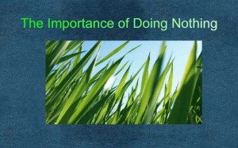

And The Oscar Goes To … !
By · CommentsAll the world’s a stage, and all the men and women merely players. They have their exits and their entrances; and one man in his time plays many parts. – William Shakespeare
They rolled out the red carpet again today and the world waited by their television sets to watch the parade of glamour, style, dazzling beauties in their exclusive haute couture gowns, dapper polished gentlemen and young shy debutantes out on their first foray into the glamourous world of Hollywood Royalty.
The seasoned pros were careful to show a neatly turned ankle, make un-classy comments about which fashion house had dressed them up for the occasion, and although happy to be nominated, took care not to appear too eager or bashful and tried hard to pretend that it would not matter if they did not win. That being nominated was enough. But is it? Read More→
The Company You Keep
By · CommentsHe who walks with wise men will be wise. But the companion of fools will suffer harm – Proverbs 13:20
Birds of a feather flock together is a metaphor for the modern herd instinct that is born out of fear. The fear of being different, of standing out from the crowds. Our entire education is pounding us into uniformity and we lose the essence of what makes us unique.
Like seeks like and cannot grow. The truth is we need diversity in order to grow- a diversity not only of cultures, but of thought, of beliefs and differences in skills and experience. Too much likeness can cause stagnation.
And yet, we can become more than we thought we were possible of and fly higher than ever , if we carefully select the flock with whom we can fly happily into the sunrise or sunset. This applies to individual performance as well as to company performance. Here’s how… Read More→
The Intelligence of the Heart
By · CommentsThe Heart has its reasons that Reason does not understand – Jacques Benigne Bossuel
On the occasion of Valentine’s day that has been so over commercialized in favour of promoting the merchandising of hearts, flowers and chocolates and all the gifts one can buy for one’s loved one, I would like to pay homage to the Human Heart.
That valuable human organ that has been so much romanticized by the poets and so medically reduced to a mere pumping machine that keeps us alive.
The human heart feels things that the eyes cannot see and knows things that the mind cannot understand. Modern scientists are unravelling the mysteries of the powerful intelligence of the heart and what this phenomenal miracle can do that far surpasses what we have ever learnt about it in the rational world. Read More→
Starting a Business : Not for the Faint of Heart
By · CommentsA business has to be involving , it has to be fun and it has to exercise your creative instincts. – Richard Branson
Getting into Business is like getting onto a never ending Roller coaster ride. There will be highs and lows and your stomach will be tied up in knots most of the time, but there will also be that thrill and freedom of accomplishing something by yourself. But not all people like Roller Coasters, nor are all suited for a Business!
Every economic Recession has spawned a myriad new businesses. Of these only a few survive and even fewer become successful. People write themselves or their businesses off as a failure when in fact other people are succeeding at the exact same business! What then, makes some succeed and others fail?
My contention is that not enough time was spent in the Start up phase, in fact in the pre-start up phase of their Business . Most people go into Business for the wrong reasons – predominantly to make money. However they don’t stay in business because that business was not right for them. Read More→
The Importance of Doing Nothing
By · CommentsSitting quietly, doing nothing, Spring comes, and the grass grows by itself – Zen Proverb
In a world that favours being busy doing something over Doing nothing, close observation would reveal that much could be achieved by that forgotten art of Doing Nothing.
We strive to achieve results, to get ahead in life and our accomplishments are no doubt made the sweeter by our toil and efforts. However, as in nature, there is a season for everything – a time to be busy and a time to be still. And when all your efforts seem to bring no results, it is not the time to double your efforts, but to be still and do nothing.
A wise woman once told me that when Nothing works, Do Nothing! Here are some instances when doing Nothing is the most expedient thing to do! Read More→

{kind=link}
{kind=link}
{kind=link}
{kind=link}
{kind=link}